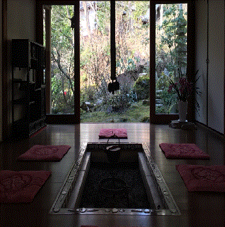

もし日本座敷を一つの黑繪に喩へるなら、障子は黑色の最も淡い部分であり、床の間は最も濃い部分である。私は、敷奇を凝らした日本座敷の床の間を見る毎に、いかに日本人が陰翳の秘密を理解し、光りと蔭との使ひ分けに巧妙であるかに感嘆する。なぜなら、そこには此れと云ふ特別なしつらへがあるのではない。要するに唯淸楚な木材と淸楚な壁とを以て一つの凹んだ空間を仕切り、そこへ引き入れられた光線が凹みの此處彼處へ朦朧たる隈を生むやうにする。にも拘らず、われらは落懸のうしろや、花活の周圍や、違ひ棚の下などを填めてゐる闇を眺めて、それが何でもない蔭であることを知りながらも、そこの空気だけがシーンと沈み切つてゐるやうな、永劫不變の閑寂がその暗がりを領してゐるやうな感銘を受ける。思ふに西洋人の云ふ「東洋の神秘」とは、斯くの如き暗がりが持つ無氣味な靜かさを指すのであらう。われらと雖も少年の頃は、日の目の屆かぬ茶の間や書院の床の間の奥を視つめると、云ひ知れぬ怖れと寒けを覺えたものである。而もその神秘の鍵は何處にあるのか。種明かしをすれば、畢竟それは陰翳の魔法であつて、もし隅々に作られてゐる蔭を追ひ除けてしまつたら、忽焉としてその床の間は唯の空白に歸するのである。われらの祖先の天才は、虚無の空間を任意に遮蔽して、自ら生ずる陰翳の世界に、いかなる壁畫や裝飾にも優る幽玄味を持たせたのである。これは簡單な技巧のやうであつて、實は中々容易でない。たとへば床脇の窓の刳り方、落懸の深さ、床框の高さなど、一つ一つに眼に見えぬ苦心が拂はれてゐることは推察するに難くないが、分けても私は、書院の障子のしろじろとしたほの明るさには、ついその前に立ち止まつて時の移るのを忘れるのである。元來書院と云ふものは、昔はその名の示す如く彼處で書見をするためにあゝ云ふ窓を設けたのが、いつしか床の間の明り取りとなつたのであらうが、多くの場合、それは明り取りと云ふよりも、むしろ側面から射して來る外光を一旦障子の紙で濾過して、適當に弱める働きをしてゐる。まことにあの障子の裏に照り映えてゐる逆光線の明りは、何と云ふ寒々とした、わびしい色をしてゐることか。庇をくゞり、廊下を通つて、やうやうそこまで辿り着いた庭の陽光は、もはや物を照らし出す力もなくなり、血の氣も失せてしまつたかのやうに、たゞ障子の紙の色を白々と際立たせてゐるに過ぎない。私はしばしばあの障子の前に佇んで、明るいけれども少しも眩ゆさの感じられない紙の面を視つめるのであるが、大きな伽藍建築の座敷などでは、庭との距離が遠いためにいよいよ光線が薄められて、春夏秋冬、晴れた日も、曇つた日も、朝も、晝も、夕も、殆どそのほのじろさに變化がない。そして縦繁の障子の棧の一とコマ毎に出來てゐる隈が、恰も塵が溜まつたやうに、永久に紙に沁み着いて動かないのかと訝しまれる。さう云ふ時、私はその夢のやうな明るさをいぶかりながら眼をしばだゝく。何か眼の前にもやもやとかげろふものがあつて、視力を鈍らせてゐるやうに感ずる。それはそのほのじろい紙の反射が、床の間の濃い闇を追ひ拂ふには力が足らず、却つて闇に彈ね返されながら、明暗の區別のつかぬ昏迷の世界を現じつゝあるからである。諸君はさう云ふ座敷へ這入つた時に、その部屋にたゞようてゐる光線が普通の光線とは違ふやうな、それが特に有難味のある重々しいものゝやうな氣持がしたことはないであらうか。或は又、その部屋にゐると時間の經過が分らなくなつてしまひ、知らぬ間に年月が流れて、出て來た時は白髪の老人になりはせぬかと云 ふやうな、「悠久」に對する一種の怖れを抱いたことはないであらうか。 谷崎潤一郎『陰翳礼賛』より抜粋
